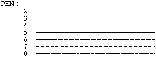
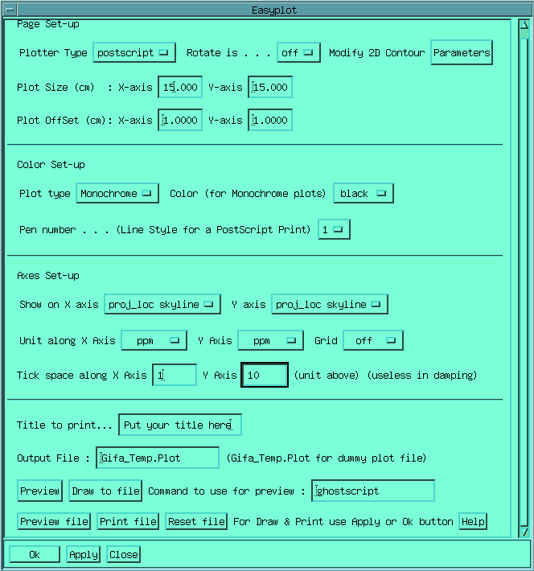

Plot commands are implemented so that you can build from Gifa any kind of plot by adding each plot element to a plot file. So each plot command requires a parameter which is the filename in which the plot is stored. There are also context commands, which do not realize any plot actions, but rather describe how the next plot will be done (for instance CX)
The 3 first commands determines the kind of plots that will be performed by the plotting commands. The size of the plot will depend on the contexts CX and CY (in centimetres). ROTATE exchange X and Y axes on the plotter such that the drawings are rotated on the sheet. Two kinds of plotter can be connected to Gifa : a HP-GL plotter (usual for pen plotter) or a Postscript (usual for laser printers). The plotter is chosen with the PLOTTER command, you can tell for which plotter the program is currently connected to with the CONFIG command.
The PLOT command will plot
whatever is currently on the screen. In 2D, the plot will be strictly
equivalent to what is displayed by the CDISP2D
mode; in 1D, the plot will be equivalent to what is displayed, but in
a CX x CY
format; in 3D the last extracted plane, as seen on the 2D display
will be plotted.
PEN permits
to change the active pen. In HP-GL, this is the number of the pen; in
Postscript, 8 kind of lines are available :
PCOLOR
permits to choose a colour when plotting on a colour Postscript
printer. Only the 8 basic Gifa colours are thus available. If you
wish to use more exotic colours, you should edit the plot file itself
(look at the macro setfont for
instance).
PAGE will send
the page to the plotter, and eject the page on a plotter.
PLOTOFFSET
is the constant offset on x and y axes which is applied for each
plots. Each plotting command will see the point at coordinates 0;0 as
actually being offsetted from the true 0;0 of the paper with the
PLOTOFFSET values. PLOTOFFSET
permits to stack different plots on a single sheet.
title
will plot the text following the command at coordinates x=0, y=CY+1.
PLOT? will prompt you for
all the parameters currently used for plotting.
All these
commands will prompt you for an output parameter, entering *PL
(or *PLOTTER) will output the
plot to the plotter. Entering a file-name will create a file
containing the graphic commands for the plotter. If you send several
plot commands to the same file, the following commands will be
appended to the first one in the plot file, thus permitting to make
composite plots on a single sheet. The PAGE
command appends the order for page change, send the file to the
plotter port, and makes Gifa « forget » about
the plot file, thus plotting again on that file will erase the file
and start a new plot. FORGET
will only makes Gifa forget the file, without sending it to the
plotter.
The plot file can also be sent to the plotter by typing
at the operating system level :
$gifaplot plot_file plotter_type
with plotter_type being either postscript or HP-GL, depending on
the type of plot file you have created.
When working in
postscript, it is very convenient to use a Display Postscript program
to monitor the state of the current plot file.
The first command permits to draw an horizontal and/or vertical
axis on the current plot. The graduation is done according to the
current values of SPECW and
OFFSET. PLOTAXIS?
permits to configure the axes drawn by PLOTAXIS.
GRID permits to draw a grid of
CX by CY on the current plot, it will use the axes determined by
PLOTAXIS?. Check the macros
plotn and nice_plot for examples of these functions.
The macro
plot_damp draws on the plotting file a logarithmic scale, to be used
only for damping (DOSY or Relaxation) processings.
STPL will generate a stack
plot either on the screen (*S),
on the plotter (*PL) or in a
file. The stack-plot depends on the value of the following contexts
:
CX : length in centimetres
of a line.
CY : maximum
height of a peak in centimetres.
SCALE
: scaling applied to the data before plotting, if scale=1 then the
larger peak on the surface will be CY high, if scale>1 then
clipping will occur.
STDY :
each new line is offsetted by STDY
centimetres in the Y axis.
STSKIP
: every STSKIP line of the
data-set will be drawn.
STSHIFT
: each new line will be shifted right by STSHIFT
points, if negative then the shift is done on the left. (May be
fractional).
STSKEW :
determines how the horizontal lines are skewed during plot, (if
negative skewed to the left and to the right if positive.
STPL?
permits to check all the parameters in one command.
On
screen stack plots are currently limited to 256x128 points (larger
plots generally crashes the graphic).
This macro has been written in order to help the user in realising rapidly simple plots. A FORM shows up which permits to determine most of the plot parameters for a 1D or 2 2D plot.

Most
controls are natural, and refers to to parameters which have been
presented above. However, some controls may have to be explained:
Only the currently zoomed region will be plotted.
If you switch from postscript to HP-GL and define large CX and CY, it is better to close and reopen the easyplot form.
Axes set-up uses the the PLOTAXIS set of commands to draw the axes on the spectrum
Output file: can be anything, if GifaTemp.Plot is chosen (it is the default) the file will be removed after plotting
preview commands :
The form
makes use of a preview program to display the resulting plots before
actually doing the plot. The name of the command to use can be
changed, by default the ghostscript display postscript program is
used. The associated controls are :
writes to a temporary file and starts a preview for that file.
to file sen the drawing to the defined file. You can add several drawing to the same file.
file starts a preview on the current drawing file.
File send the file (created with the Draw to file) to the plotter, and start a new plot.
File undo every thing and start a new file.